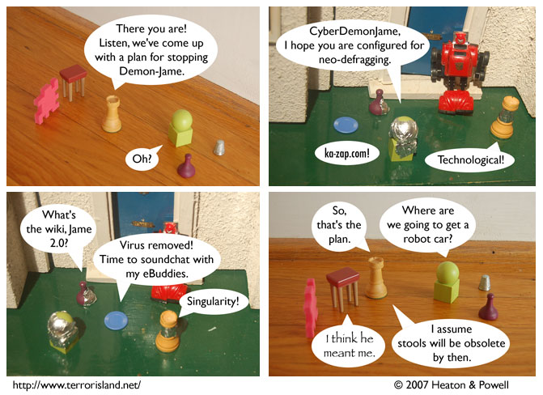

Strip #181
— Wednesday, August 8, 2007
Freedom is the right of all sentient stools.
Notes, Thoughts, &c.
Ben’s Notes
The future slang meaning of “wiki” comes from Superosity.
Lewis’s Notes
Luckily, when we get to the future, I’ll have an easy time communicating, since all I will have to do is add some meaningless techie jargon to my ordinary speech.